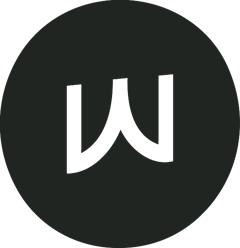

From first message to a locked date. You always know what happens next, and what it costs.

The space, the date, what you need.
Crew, time and every cost, within 2 hours.
We confirm your crew and arrival window.
| Stamp · subtle · 9.5 | The charm of SW-02/04 at SW-05/06 volume. The edge only shows itself up close, which suits a section between two busy ones. My pick. |
| Stamp edge · 9 | The full scallop. Most ownable, a touch loud next to R2-E. |
| Pinhole · 9 | Quietest. Only the tear lines are perforated. |
| Notched · 8 | Instantly a ticket, but the most expected. |
| Centre · 9 | Sits on the ticket's middle line, so it balances the three columns and lines up with the notches. Reads as the ticket's seal. |
| Foot · 8.5 | Reads as a printed issuer mark. Quieter, but leaves the stub looking empty above it. |
| Write-in · 9.5 | Your pick. Each field writes in left to right, then the stamp lands. |
| Print across · 8.5 | A print head crosses the ticket in 30 steps. More mechanical; good if you want an "issued" feeling. |
| Unroll + write · 8 | The ticket unrolls from the stub, then writes in. |
Stamp · subtle, symbol centred, Write-in. Up from 94: a more ownable edge at the same restraint, and motion that follows the ticket's direction.